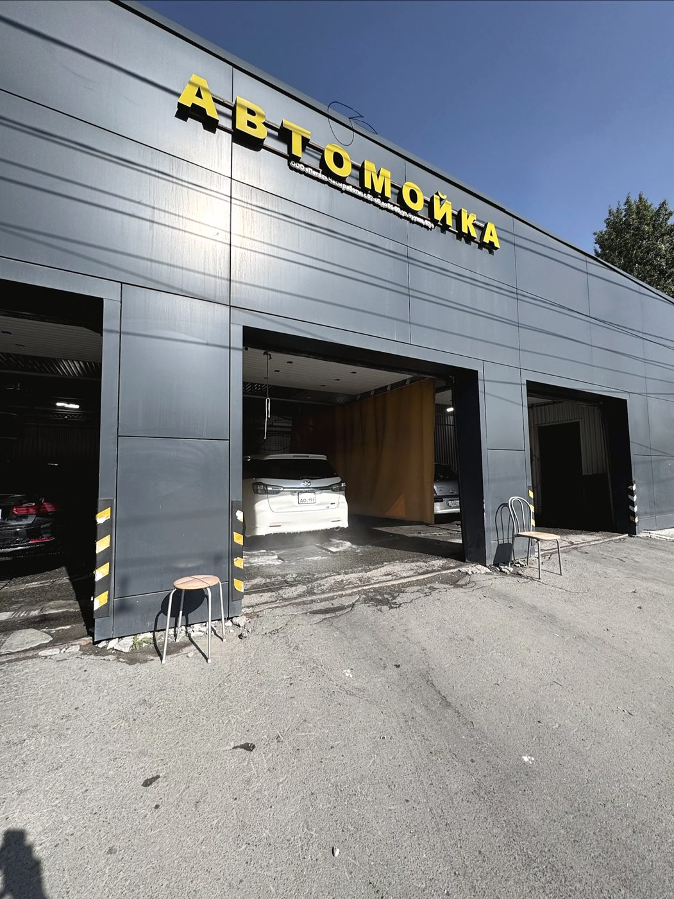
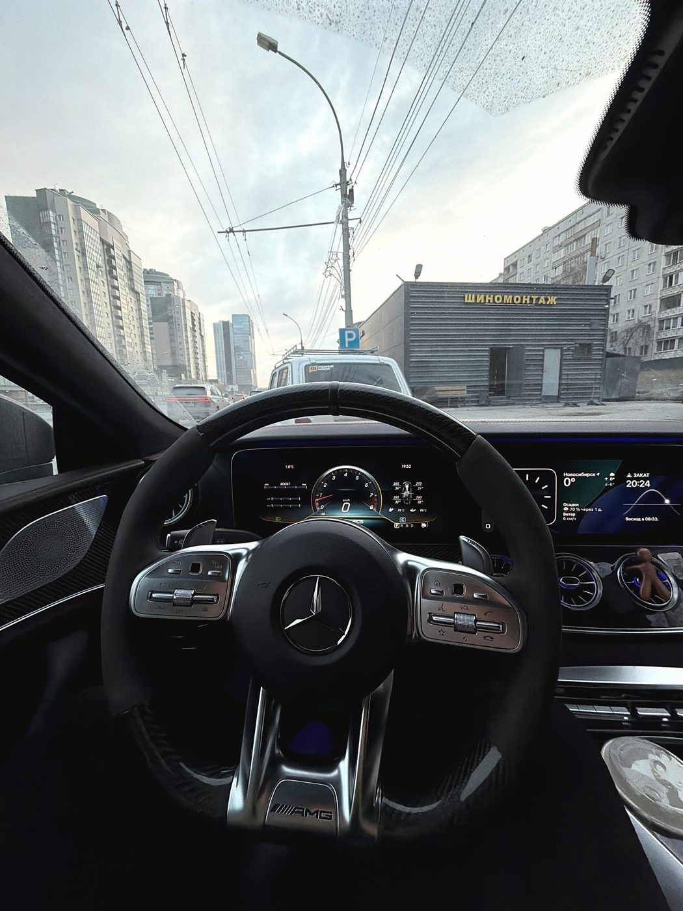
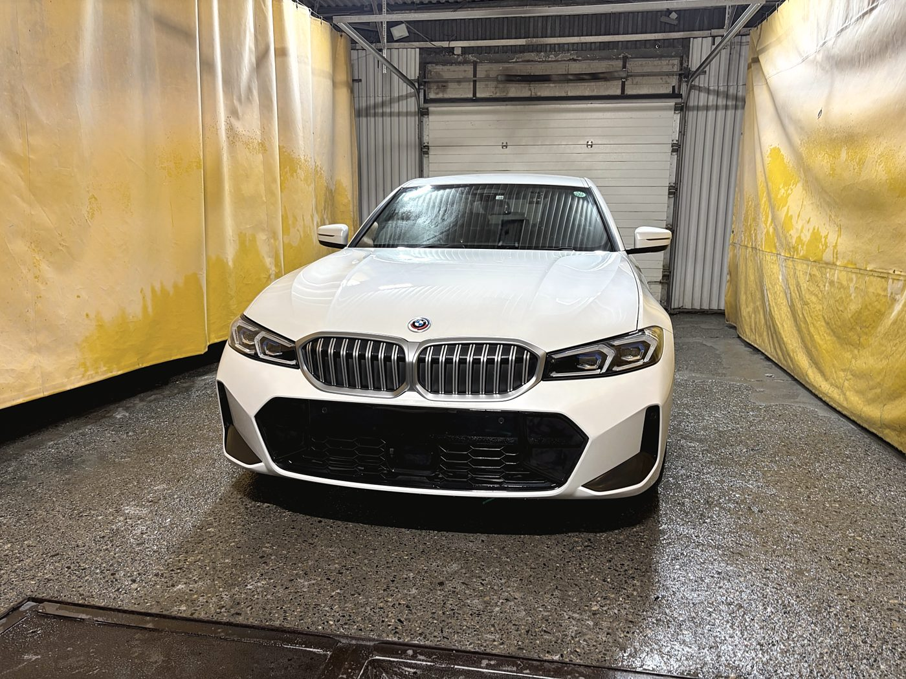
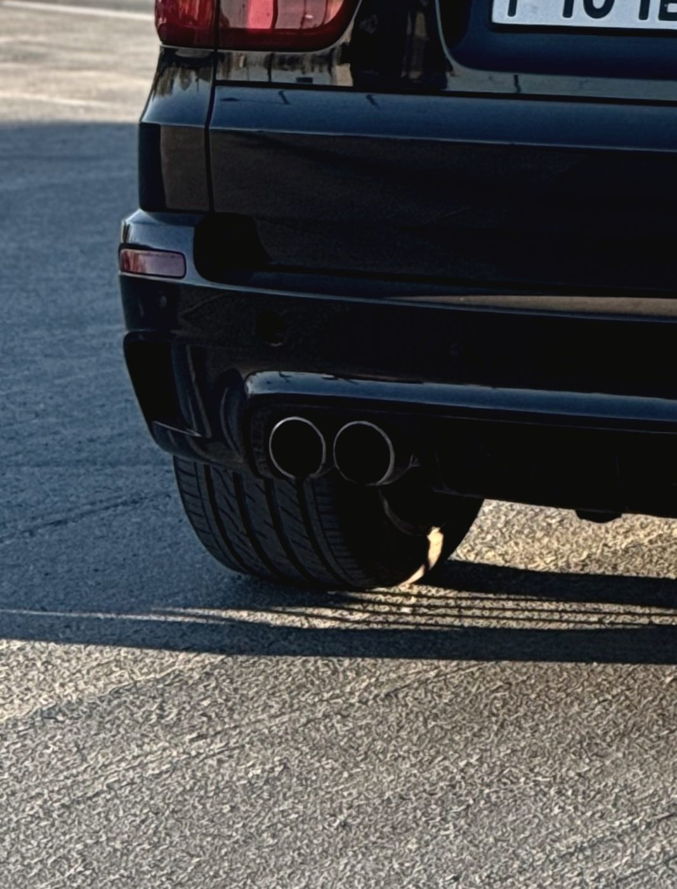
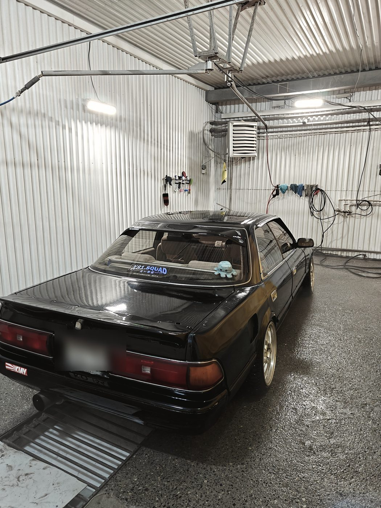
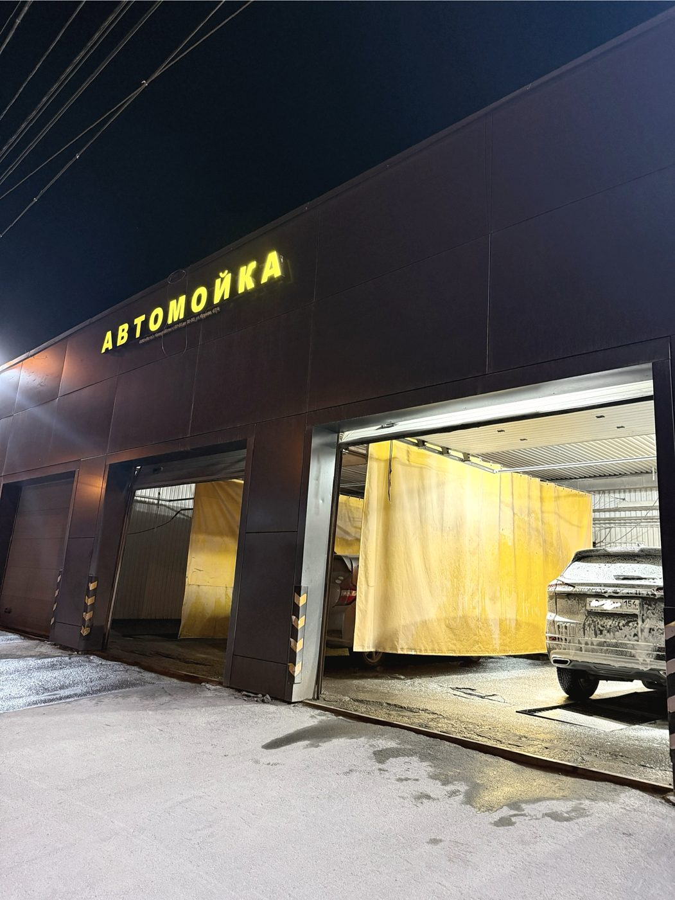
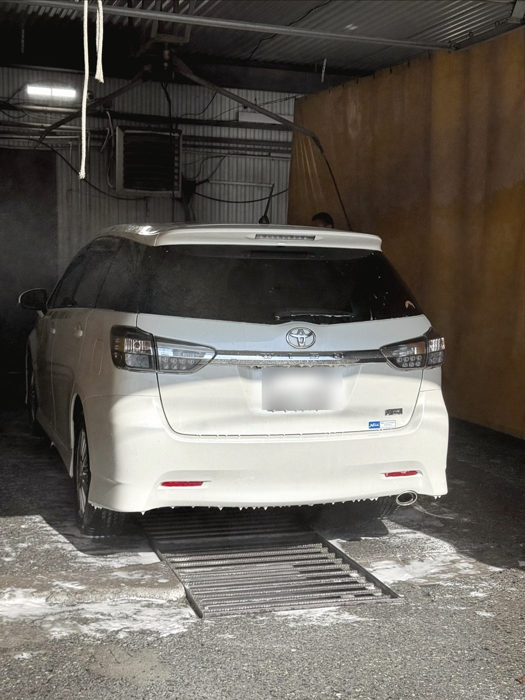
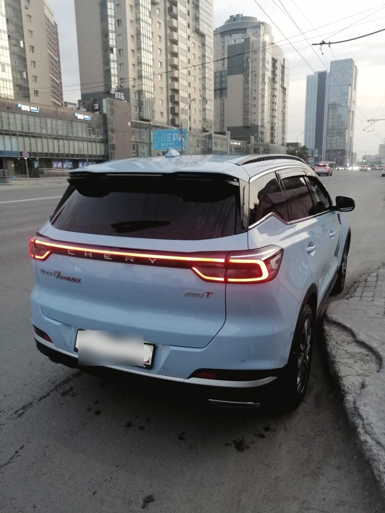
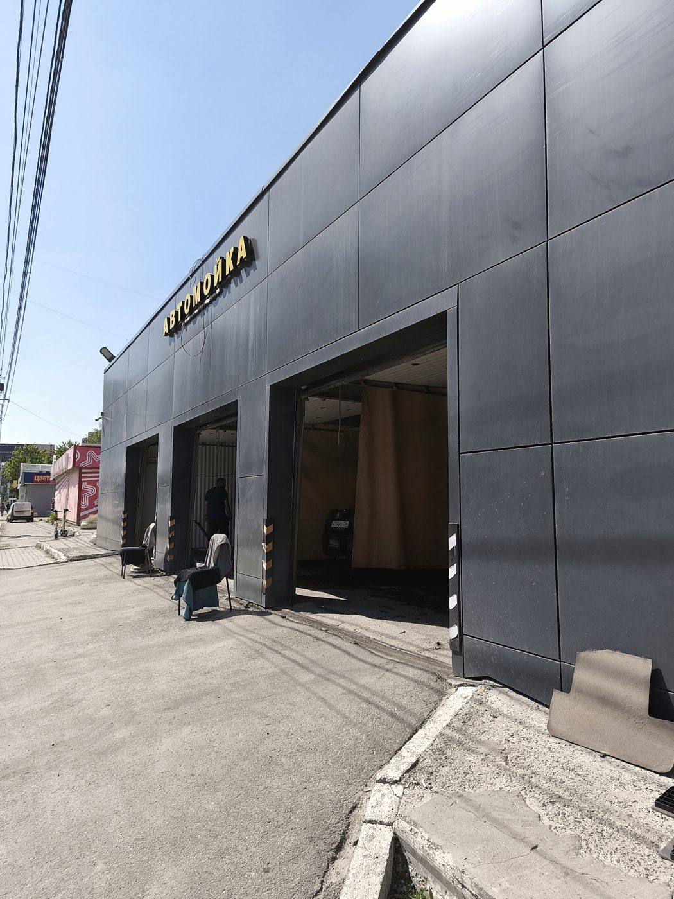

07:00 — до пробок
Успеть помыться перед работой реально: в семь утра боксы свободны, комплекс занимает столько же, сколько днём.
Автомойка, детейлинг и шиномонтаж · улица Фрунзе, 67/4 · Дзержинский район
Комплексная и бесконтактная мойка, химчистка салона, мойка двигателя и днища, полировка кузова. Плюс шиномонтаж, включая то, что делают не везде: ремонт порезов, наварка шин и мотошиномонтаж.

Режим
Большинство моек в районе открывается к девяти и закрывается к восьми — ровно в те часы, когда вы на работе. Мы работаем с семи утра до двенадцати ночи, и в субботу с воскресеньем тоже.
Успеть помыться перед работой реально: в семь утра боксы свободны, комплекс занимает столько же, сколько днём.
В будни днём очередей почти нет, а на комплекс и химчистку лучше записаться, чтобы под вас держали бокс.
«Приехали под самое закрытие, ребята не отказали, успели идеально помыть кузов» — отзыв в 2ГИС, июль 2026.
Что мы отмывали
Все четыре случая — из отзывов наших клиентов. Мы ничего не придумывали: люди сами описали, в каком состоянии привозили машину.

Регулярные перевозки собак, бывшая в употреблении бензиновая газонокосилка, езда по бездорожью с грузом и «пыль веков». Плюс хозяйка — заядлый курильщик. Итог: пластик как новенький от полироли, машина благоухает.
Майя Агибалова · 11 июля 2026

Человек приезжает в Новосибирск из другого города и первым делом заезжает к нам. «После 3 тысяч км кузов, да и салон, были в печальном состоянии. После двух часов стирки я получил булочку, красивую и вкусно пахнущую».
Алексей Поляков · 2 июля 2026

Снаружи и внутри, после кузовных работ. «Помыли идеально» — и назвали мастера по имени, Захара. У нас так почти всегда: люди запоминают, кто именно мыл.
Alexander P · 16 августа 2026

Так начинается отзыв Павла — и это самая частая история. Машину, которую не мыли месяцами, мы берём в комплекс и не морщимся. Мастера, кстати, в отзыве назвали по имени: Максим.
Павел Калгушкин · 20 апреля 2026
Услуги
Комплекс снаружи и внутри, бесконтактная мойка, мойка двигателя и днища. Три поста — очередь двигается быстро даже вечером.
Химчистка салона, полировка кузова, обработка пластика. То, после чего машину не узнают — и после чего в ней перестаёт пахнуть.
Плюс то, что делают не на каждом посту: ремонт порезов, наварка шин и мойка колёс перед сезонным хранением.
Отдельно работаем с мотоциклетными колёсами — в городе таких точек заметно меньше, чем мотоциклов.



Если ждать некогда
Если все посты заняты, а у вас нет времени ждать, машину можно оставить: мы помоем её в течение дня и поставим на парковку. Заберёте в удобное время — хоть в одиннадцать вечера.
А если ждать всё-таки решили — есть зал ожидания и Wi-Fi. Или можно дойти до СибМолла: он в двух шагах.

Честно
При таком потоке машин идеально каждый раз не выходит: в отзывах нам это писали. Мы не спорим и не стираем такие отзывы — вместо этого просим об одном.
Обойдите машину, откройте двери, посмотрите пороги и стойки. Если что-то пропущено — скажите сразу, пока машина у нас: доделаем в тот же заезд. Это быстрее и честнее, чем разбираться потом.
Диски, подкапотное пространство, багажник, детское кресло, следы от собаки — у всех разное «чисто». Назовите своё при приёме, и мы начнём именно с него.
Отзывы · 4,7 из 5 по 1 230 оценкам в 2ГИС
«Ни одной разводки, ни одной пропущенной зоны»
Екатерина Кашкарова · отзыв в 2ГИС · 3 июля 2026
Всегда найдётся местечко, чтобы помыть машину, а при занятости можно оставить ключи и забрать автомобиль в удобное время с парковки. Сервисом довольны, моем свои машины всей семьёй.
Отзыв в 2ГИС · 8 июня 2026
Была здесь первый раз и осталась очень довольна. Сервис на высшем уровне — внимательно, аккуратно и быстро. Персонал вежливый и профессиональный, видно, что делают работу с душой.
Екатерина Степанова · 3 августа 2026
Заехала на шиномонтаж — и очень довольна! Мастер быстро и аккуратно накачал колесо, всё объяснил по делу. Отдельно отмечу доброжелательность: сразу чувствуется, что человек знает своё дело.
Elizabeth Vladimirovna · 8 июня 2026
Прекрасное обслуживание, парни топ! Подсказали, что нужна химчистка сидений, предложили кучу вариантов, где что в машинке подправить.
Oksana S · 18 июня 2026
Контакты